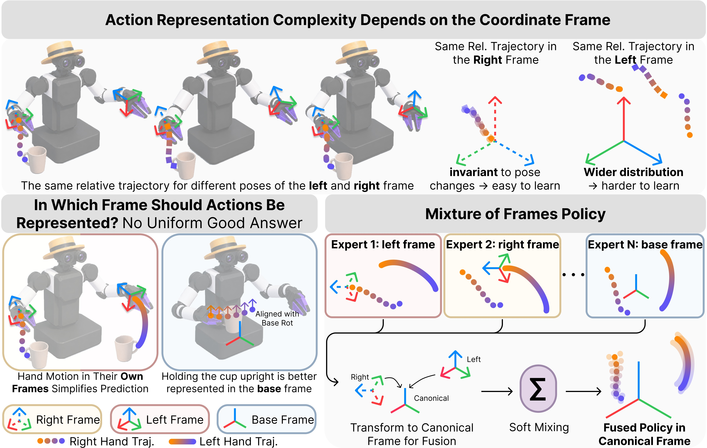
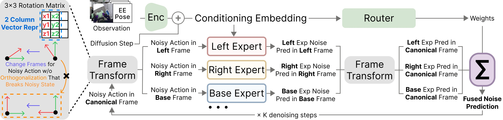
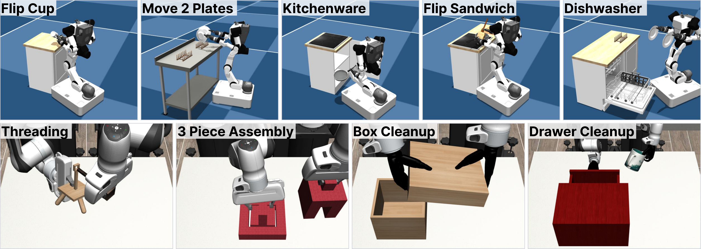
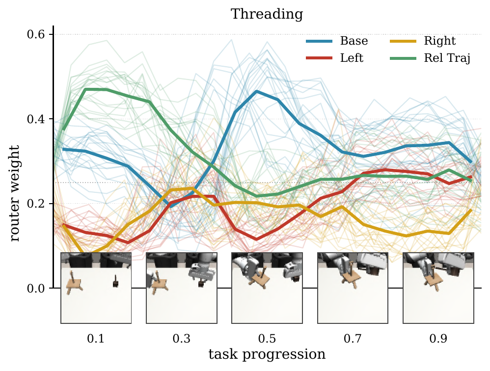
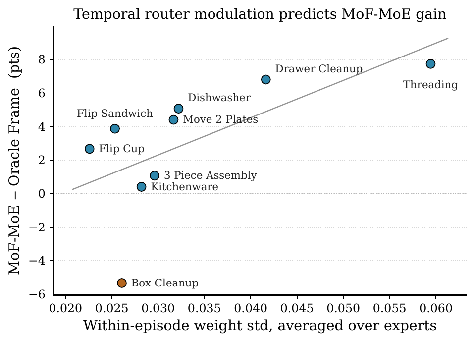
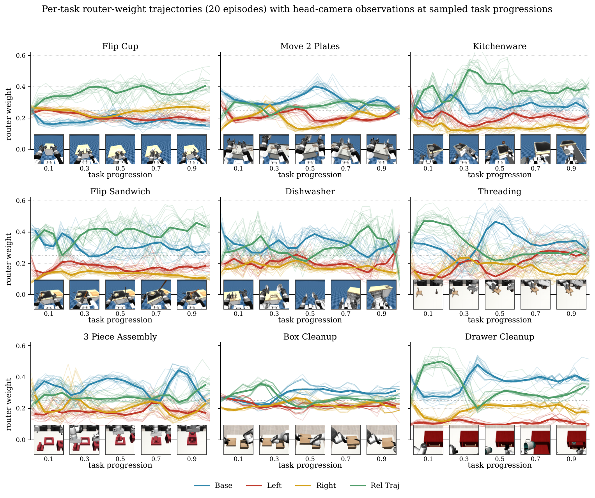
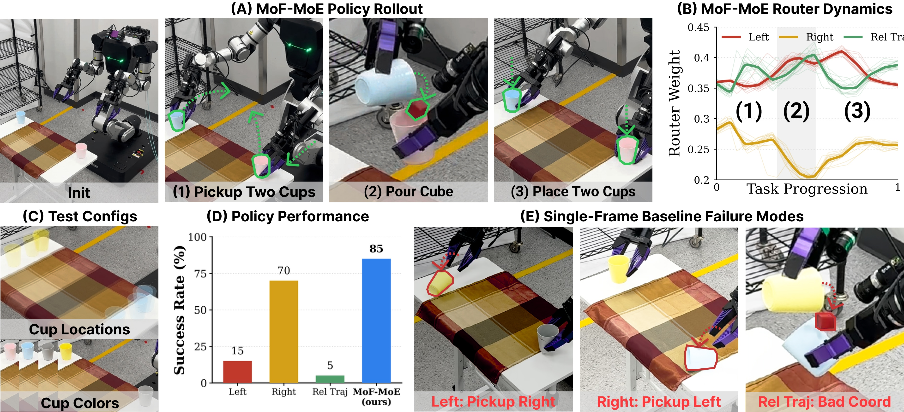
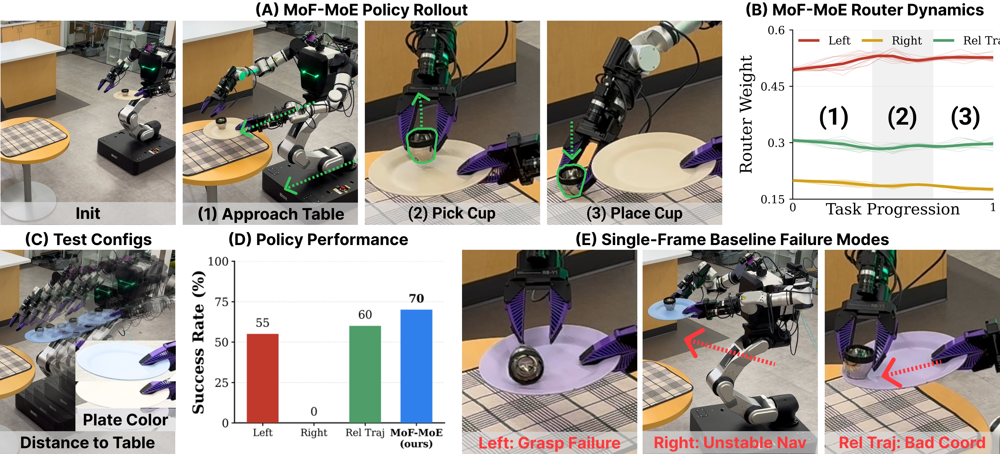

Synchronized Denoising
Each denoising step transforms the canonical noisy action into expert frames, predicts noise in each frame, transforms predictions back, and performs one standard scheduler update.
Anonymous CoRL 2026 Submission
Multi-Frame Action Denoising for Bimanual Mobile Manipulation

MoF denoises the same action trajectory through multiple coordinate frames and fuses frame-specialized predictions in a shared canonical frame.
Robotic manipulation is naturally multi-frame. Local reaching can be compact in an end-effector frame, while object transport, upright handling, and whole-body coordination can be easier in a base-aligned frame. A standard diffusion policy commits to one predefined action frame, forcing a single denoiser to model distributions that may be unnecessarily complex in that representation.
Mixture of Frames Policy (MoF) keeps a single canonical diffusion state, re-expresses it in task-relevant frames, applies frame-specialized denoisers, and fuses their noise predictions back in the canonical frame. A column-vector 6D rotation representation enables exact, differentiable frame transformations even for intermediate noisy diffusion states.

Each denoising step transforms the canonical noisy action into expert frames, predicts noise in each frame, transforms predictions back, and performs one standard scheduler update.
Predictions can be fused with learned router weights or uniform ensemble weights, allowing task phases to emphasize different action parameterizations.
Rotation columns transform as ordinary 3D vectors, avoiding lossy orthogonalization of noisy rotation channels during frame changes.
Simulations test whether action-frame choice matters, whether MoF can improve over the best task-level frame selection, and which components are responsible for the gain.




Real-world experiments evaluate whether frame-specialized denoising transfers to bimanual mobile manipulation outside simulation. We integrate MoF-MoE with a real robot policy stack and compare it with single-frame baselines over 20 rollouts per task.
Because the real-world data collection interface does not provide base frame tracking, these experiments use three experts: left end-effector, right end-effector, and relative trajectory. The tasks require switching between local manipulation, bimanual coordination, and mobile transport.

